Guide d'utilisation
Application de gestion commerciale — ventes, achats, stock, caisse, rapports.
Choisissez votre rôle dans le menu de gauche pour ne voir que les pages qui vous concernent. Cliquez sur une capture pour l'agrandir.
Avant de commencer
Se connecter
Ouvrez l'adresse de l'application dans votre navigateur. Vous arrivez sur la page de connexion.
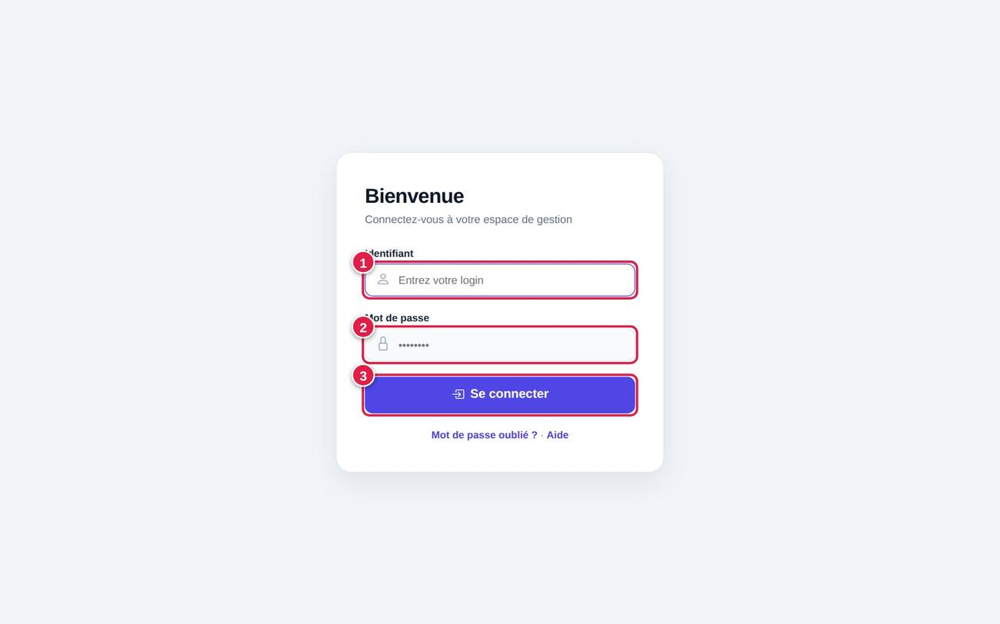
- Saisissez votre identifiant (login).
- Saisissez votre mot de passe.
- Cliquez sur Se connecter.
Découvrir l'écran principal
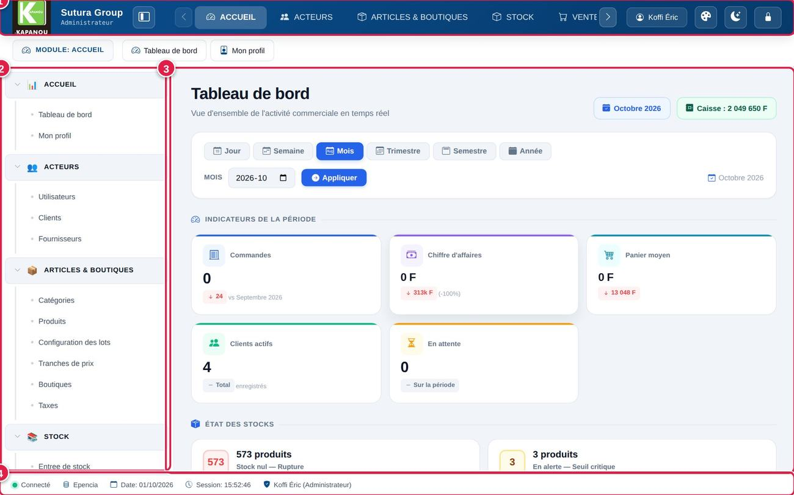
- La barre du haut : elle contient les grands modules (Accueil, Acteurs, Articles & Boutiques, Stock, Ventes, Achats, Trésorerie, Rapports), votre nom et votre rôle. Cliquez sur un module pour voir ses pages.
- Le menu de gauche : il liste les pages du module choisi.
- La zone centrale : c'est là que s'affiche la page ouverte.
- La barre du bas : elle indique que vous êtes connecté, la date et le temps de session.
Le menu ne montre que les pages auxquelles votre rôle a droit.
Les rôles : qui peut faire quoi ?
Chaque personne a un rôle. Le tableau montre les pages accessibles pour chaque rôle (✔ = accès).
| Pages | Administrateur | Superviseur | Propriétaire | Vendeur | Caisse |
|---|---|---|---|---|---|
| Tableau de bord, Mon profil | ✔ | ✔ | ✔ | ✔ | ✔ |
| Utilisateurs | ✔ | ✔ | |||
| Clients, Fournisseurs | ✔ | ✔ | ✔ | ||
| Catégories, Lots, Tranches de prix, Taxes | ✔ | ✔ | ✔ | ||
| Produits | ✔ | ✔ | ✔ | ||
| Boutiques, Gestion des caisses | ✔ | ✔ | |||
| Entrée de stock, Ajustement | ✔ | ✔ | ✔ | ✔ | |
| Sortie de stock | ✔ | ✔ | ✔ | ||
| Transfert de stock | ✔ | ✔ | |||
| Vente en détail, Bon de commande, Bon de commande fournisseur | ✔ | ✔ | ✔ | ✔ | ✔ |
| Bon de livraison | ✔ | ✔ | ✔ | ✔ | ✔ |
| Règlements clients / fournisseurs, Facture fournisseur | ✔ | ✔ | ✔ | ✔ | |
| Ouverture / Fermeture caisse, Dépenses, Transactions | ✔ | ✔ | ✔ | ✔ | |
| Historique produits, Mouvement de stock, Rapport commercial | ✔ | ✔ | ✔ | ||
| Rapport financier | ✔ | ✔ | ✔ | ✔ |
- L'Administrateur et le Superviseur voient toutes les boutiques.
- Le Propriétaire, le Vendeur et le Caissier ne voient que leur boutique.
- Seuls l'Administrateur et le Superviseur gèrent les utilisateurs et peuvent annuler une transaction.
Conseils valables sur toutes les pages
- Filtrer : tapez un mot ou choisissez un critère, puis cliquez sur « Filtrer ». « Réinitialiser » efface les filtres.
- Crayon = modifier. Corbeille = supprimer. Œil = voir le détail.
- Les champs avec une étoile rouge (*) sont obligatoires.
- Les montants sont en francs CFA (F).
- Les pastilles rouges numérotées des captures d'écran renvoient aux explications qui les suivent.
1Tableau de bord (Administrateur / Superviseur)
À quoi ça sert ? C'est la page d'accueil du patron. Elle résume l'activité : combien de ventes, combien d'argent rentré, l'état des stocks.
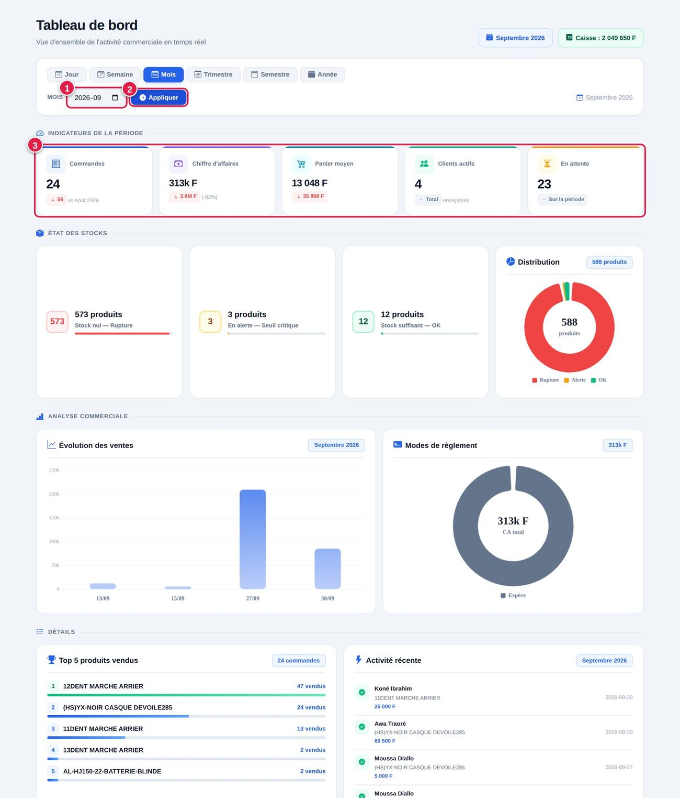
Que voit-on sur cet écran ?
- Le mois affiché. Changez-le pour voir un autre mois.
- Le bouton Appliquer : il met à jour les chiffres avec la période choisie.
- Les indicateurs de la période : nombre de commandes, chiffre d'affaires, panier moyen, clients actifs, commandes en attente.
Au-dessus, les boutons Jour / Semaine / Mois / Trimestre / Semestre / Année changent la durée observée. Plus bas, vous voyez l'état des stocks (produits en rupture, en alerte, en quantité suffisante) et des graphiques sur l'évolution des ventes et les modes de règlement. Le montant « Caisse » en haut à droite est le solde total des caisses.
Comment faire, pas à pas
- Cliquez sur la période voulue (par exemple Mois).
- Choisissez le mois dans la case.
- Cliquez sur Appliquer.
2Tableau de bord du Propriétaire
À quoi ça sert ? Même idée que le tableau de bord principal, mais limité à votre boutique.
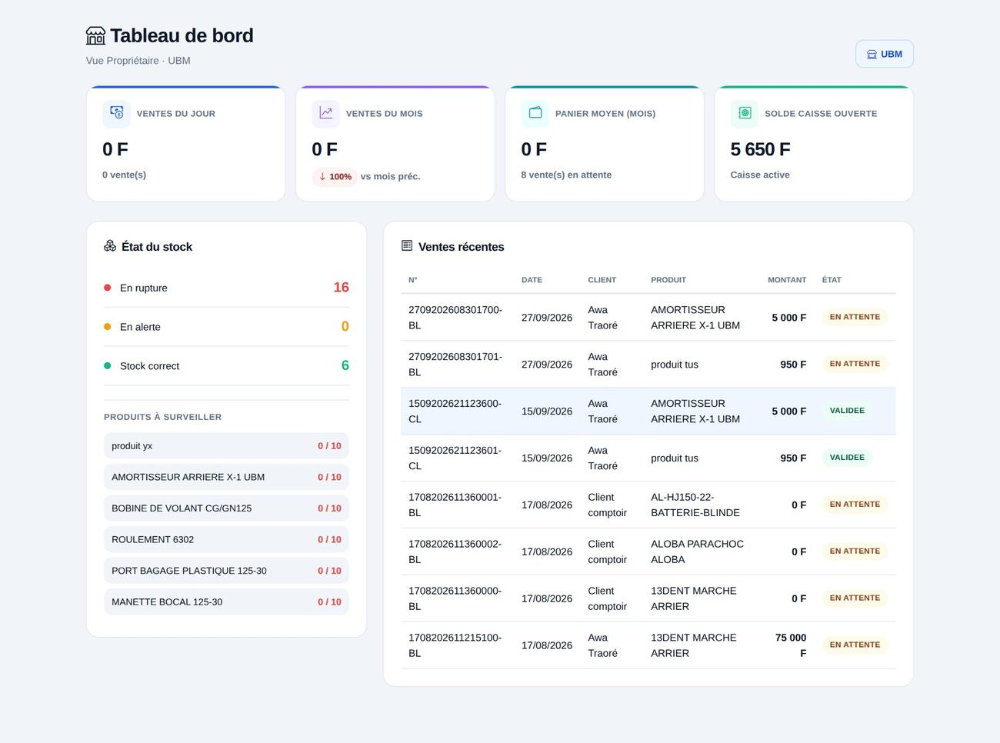
Vous y trouvez : les ventes du jour et du mois, le panier moyen, le solde de la caisse ouverte, l'état du stock de votre boutique (rupture, alerte, correct), la liste des ventes récentes et les produits à surveiller (stock bas).
3Tableau de bord du Caissier
À quoi ça sert ? Page d'accueil du caissier : l'état de sa caisse et les opérations du jour.
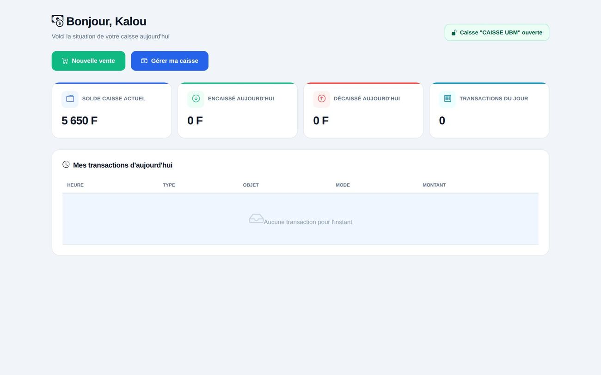
En haut, deux raccourcis : Nouvelle vente (ouvre la vente en détail) et Gérer ma caisse (ouverture/fermeture). Dessous : solde de la caisse, encaissé aujourd'hui, décaissé aujourd'hui, nombre de transactions du jour, puis la liste de vos transactions d'aujourd'hui. Le petit badge vert en haut à droite indique la caisse actuellement ouverte.
4Tableau de bord du Vendeur
À quoi ça sert ? Page d'accueil du vendeur : ses ventes en un coup d'œil.
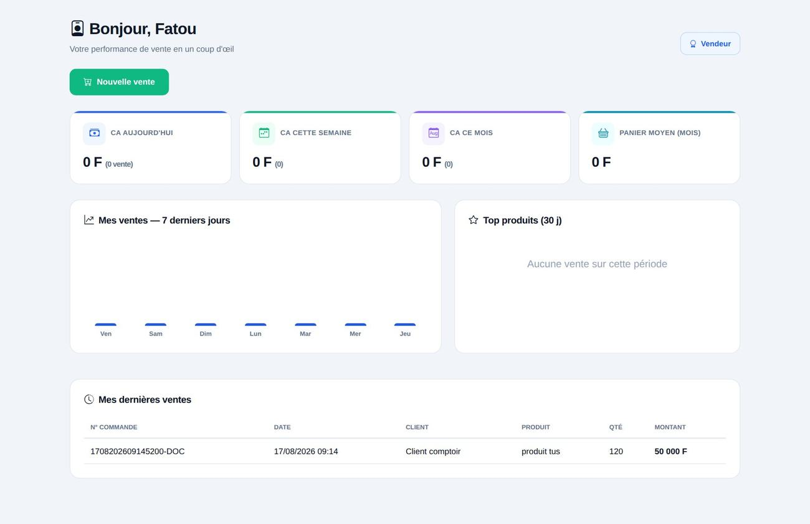
Le bouton Nouvelle vente vous mène directement à la vente en détail. Les quatre cartes montrent votre chiffre d'affaires du jour, de la semaine, du mois et votre panier moyen. Plus bas : un graphique de vos ventes sur 7 jours, vos meilleurs produits sur 30 jours et la liste de vos dernières ventes.
5Mon profil
À quoi ça sert ? Voir et modifier vos informations personnelles.
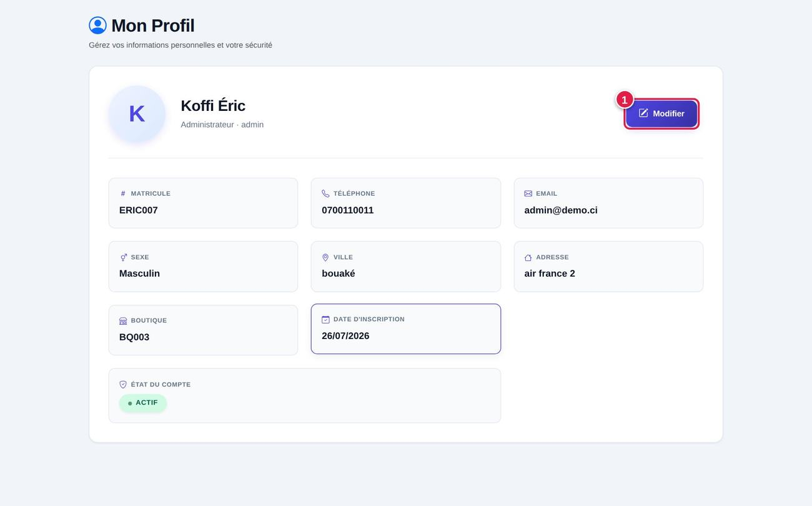
Que voit-on sur cet écran ?
- Le bouton Modifier : il permet de changer vos informations (téléphone, adresse, mot de passe…).
La page affiche votre matricule, téléphone, e-mail, sexe, ville, adresse, boutique d'affectation, date d'inscription et l'état de votre compte.
Comment faire, pas à pas
- Cliquez sur Modifier.
- Changez l'information voulue.
- Enregistrez.
6Utilisateurs
À quoi ça sert ? Créer les comptes des personnes qui utiliseront l'application et leur donner un rôle (ce qu'elles ont le droit de faire).
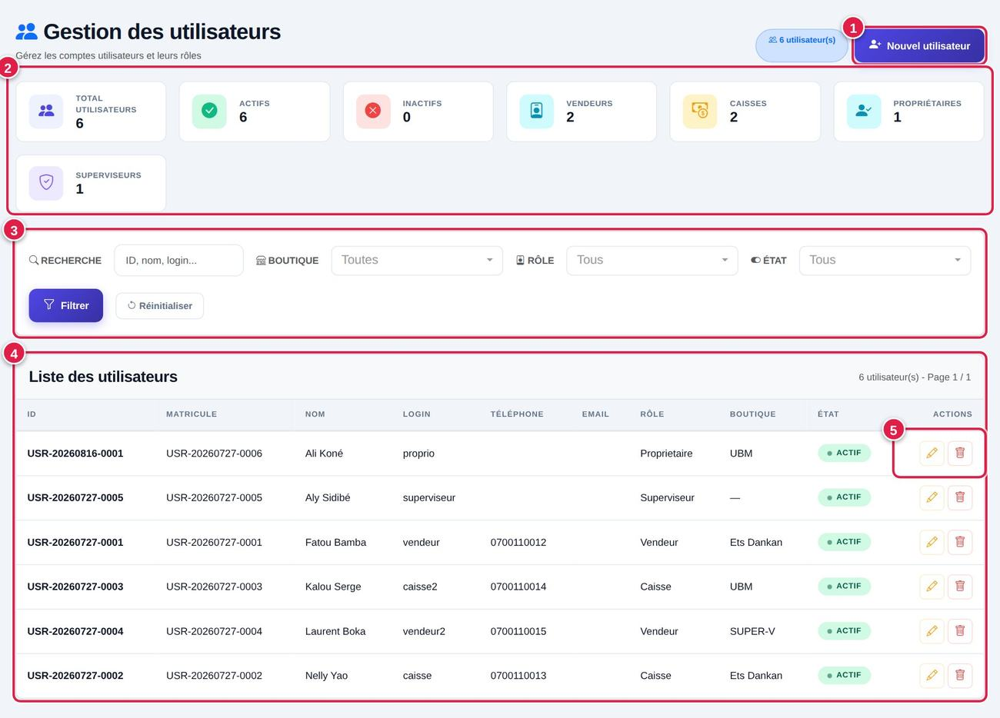
Que voit-on sur cet écran ?
- Le bouton principal en haut à droite : il sert à ajouter un nouvel élément.
- Les chiffres clés : un résumé rapide (total, actifs, inactifs…).
- Les filtres : tapez un mot dans « Recherche » ou choisissez un critère, puis cliquez sur Filtrer. Réinitialiser remet tout à zéro.
- La liste des éléments déjà enregistrés.
- Les actions de chaque ligne : le crayon pour modifier, la corbeille pour supprimer.
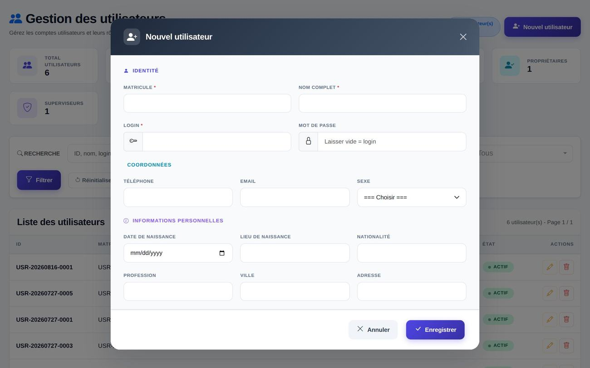
Les rôles possibles sont : Administrateur, Superviseur, Propriétaire, Vendeur et Caisse. Chaque utilisateur (sauf Administrateur et Superviseur) est rattaché à une boutique et ne voit que celle-ci.
Comment faire, pas à pas
- Cliquez sur « Nouvel utilisateur ».
- Saisissez nom, identifiant de connexion et mot de passe.
- Choisissez le rôle et la boutique.
- Enregistrez. La personne peut se connecter immédiatement.
7Clients
À quoi ça sert ? Tenir la liste des personnes ou entreprises à qui vous vendez.
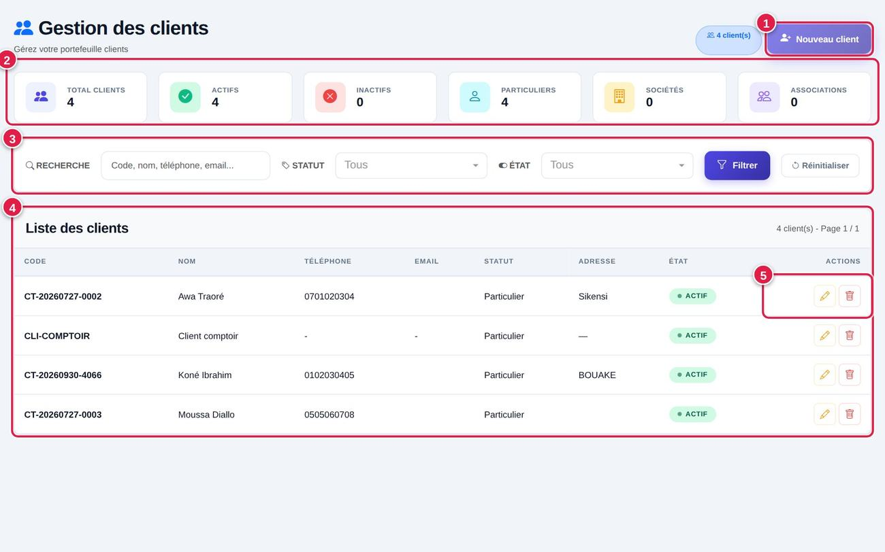
Que voit-on sur cet écran ?
- Le bouton principal en haut à droite : il sert à ajouter un nouvel élément.
- Les chiffres clés : un résumé rapide (total, actifs, inactifs…).
- Les filtres : tapez un mot dans « Recherche » ou choisissez un critère, puis cliquez sur Filtrer. Réinitialiser remet tout à zéro.
- La liste des éléments déjà enregistrés.
- Les actions de chaque ligne : le crayon pour modifier, la corbeille pour supprimer.
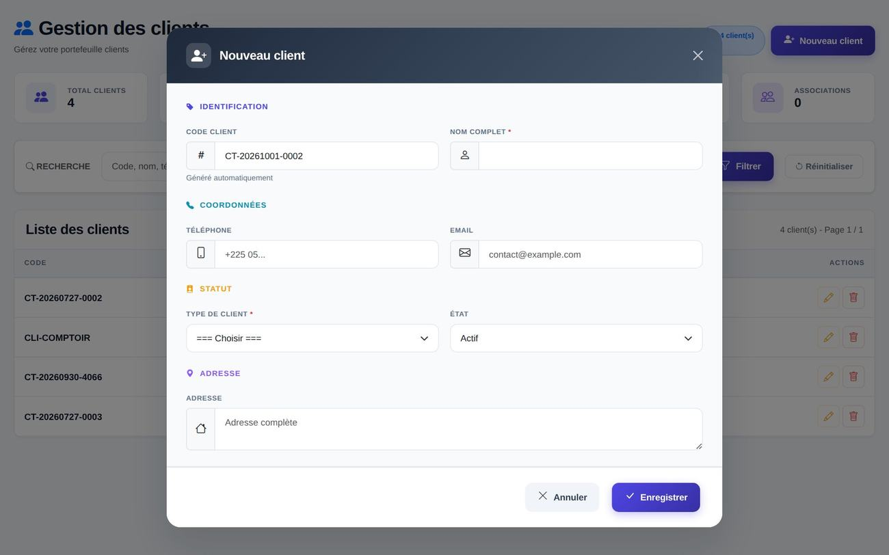
Le « Client comptoir » est un client par défaut utilisé pour les ventes rapides au comptoir. Vous pouvez aussi créer un client directement depuis la vente en détail avec le bouton « Nouveau ».
Comment faire, pas à pas
- Cliquez sur le bouton « Nouveau client » (zone 1).
- Une fenêtre s'ouvre : remplissez les champs. Ceux marqués d'une étoile rouge (*) sont obligatoires.
- Cliquez sur Enregistrer. L'élément apparaît tout de suite dans la liste.
- Pour corriger une erreur, cliquez sur le crayon de la ligne concernée (zone 5), changez ce qu'il faut, puis enregistrez.
8Fournisseurs
À quoi ça sert ? Tenir la liste de ceux qui vous vendent de la marchandise.
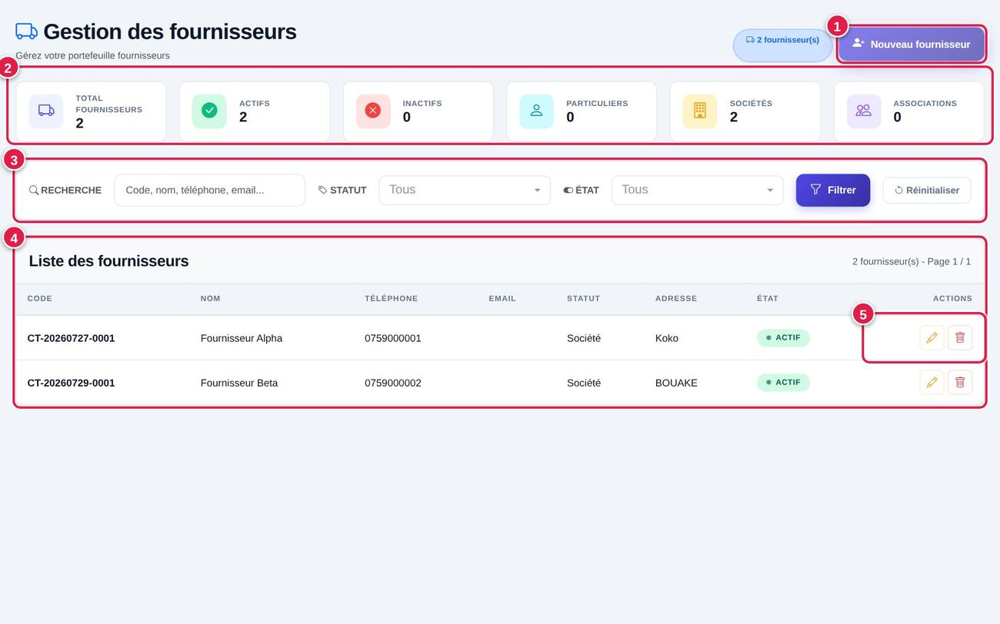
Que voit-on sur cet écran ?
- Le bouton principal en haut à droite : il sert à ajouter un nouvel élément.
- Les chiffres clés : un résumé rapide (total, actifs, inactifs…).
- Les filtres : tapez un mot dans « Recherche » ou choisissez un critère, puis cliquez sur Filtrer. Réinitialiser remet tout à zéro.
- La liste des éléments déjà enregistrés.
- Les actions de chaque ligne : le crayon pour modifier, la corbeille pour supprimer.
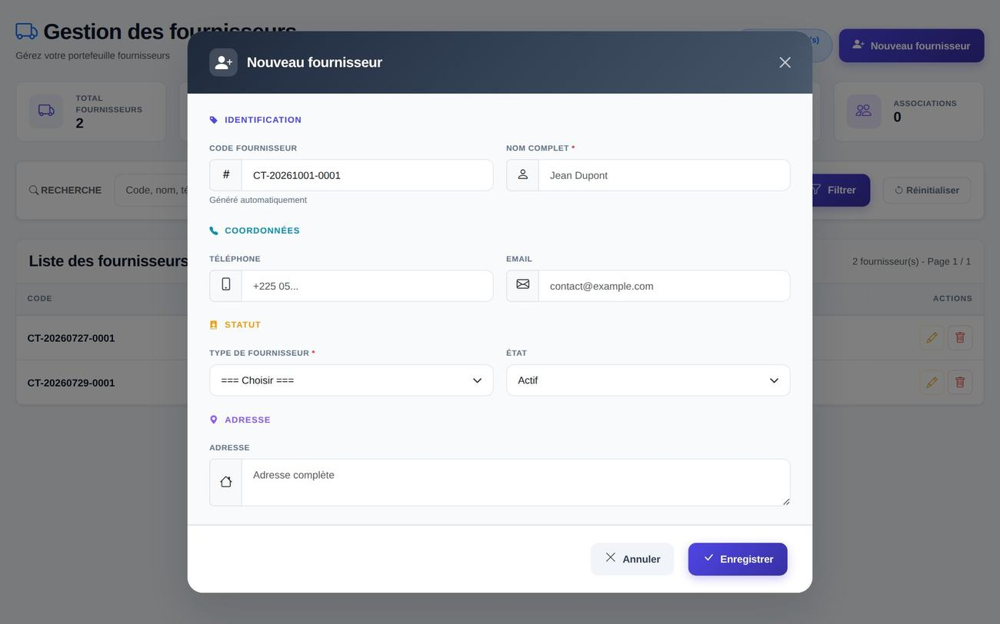
Le fonctionnement est identique à celui des clients.
Comment faire, pas à pas
- Cliquez sur le bouton « Nouveau fournisseur » (zone 1).
- Une fenêtre s'ouvre : remplissez les champs. Ceux marqués d'une étoile rouge (*) sont obligatoires.
- Cliquez sur Enregistrer. L'élément apparaît tout de suite dans la liste.
- Pour corriger une erreur, cliquez sur le crayon de la ligne concernée (zone 5), changez ce qu'il faut, puis enregistrez.
9Catégories
À quoi ça sert ? Ranger vos produits par familles (par exemple « APSONIC », « KAPANOU »…). Cela facilite la recherche.
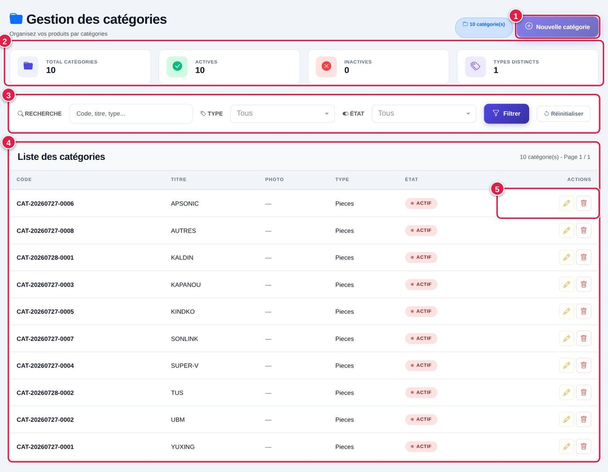
Que voit-on sur cet écran ?
- Le bouton principal en haut à droite : il sert à ajouter un nouvel élément.
- Les chiffres clés : un résumé rapide (total, actifs, inactifs…).
- Les filtres : tapez un mot dans « Recherche » ou choisissez un critère, puis cliquez sur Filtrer. Réinitialiser remet tout à zéro.
- La liste des éléments déjà enregistrés.
- Les actions de chaque ligne : le crayon pour modifier, la corbeille pour supprimer.
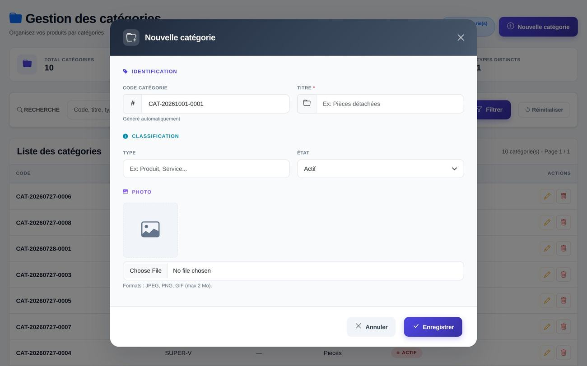
Une photo peut être ajoutée à chaque catégorie.
Comment faire, pas à pas
- Cliquez sur le bouton « Nouvelle catégorie » (zone 1).
- Une fenêtre s'ouvre : remplissez les champs. Ceux marqués d'une étoile rouge (*) sont obligatoires.
- Cliquez sur Enregistrer. L'élément apparaît tout de suite dans la liste.
- Pour corriger une erreur, cliquez sur le crayon de la ligne concernée (zone 5), changez ce qu'il faut, puis enregistrez.
10Produits
À quoi ça sert ? C'est le catalogue : la liste de tout ce que vous vendez, avec les prix et le stock.
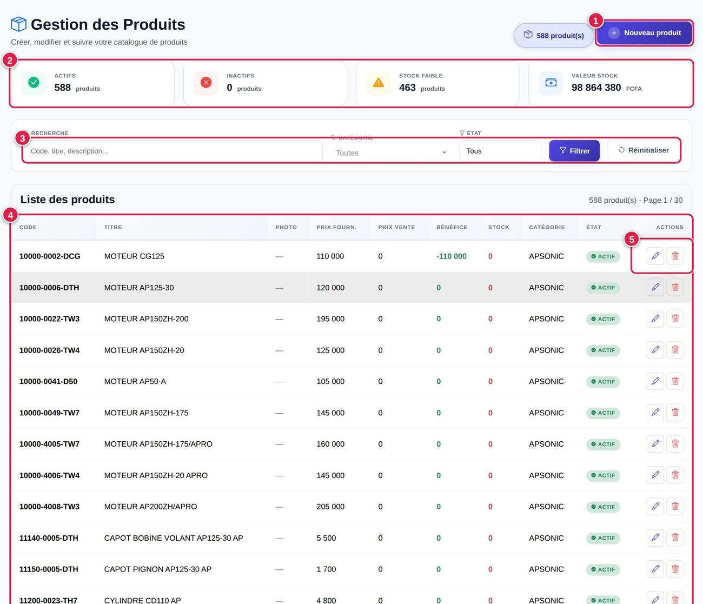
Que voit-on sur cet écran ?
- Le bouton principal en haut à droite : il sert à ajouter un nouvel élément.
- Les chiffres clés : un résumé rapide (total, actifs, inactifs…).
- Les filtres : tapez un mot dans « Recherche » ou choisissez un critère, puis cliquez sur Filtrer. Réinitialiser remet tout à zéro.
- La liste des éléments déjà enregistrés.
- Les actions de chaque ligne : le crayon pour modifier, la corbeille pour supprimer.
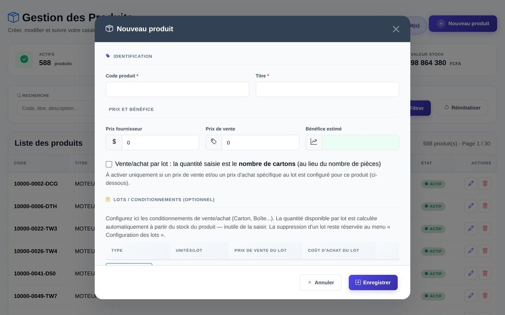
Chaque produit a un prix fournisseur (ce que vous payez), un prix de vente, un bénéfice (la différence), un stock et une catégorie. Dans la fenêtre du produit, une zone « Lots/conditionnements » permet de définir les ventes par carton, boîte, etc.
Comment faire, pas à pas
- Cliquez sur le bouton « Nouveau produit » (zone 1).
- Une fenêtre s'ouvre : remplissez les champs. Ceux marqués d'une étoile rouge (*) sont obligatoires.
- Cliquez sur Enregistrer. L'élément apparaît tout de suite dans la liste.
- Pour corriger une erreur, cliquez sur le crayon de la ligne concernée (zone 5), changez ce qu'il faut, puis enregistrez.
11Configuration des lots
À quoi ça sert ? Définir comment un produit se vend en lot (carton, boîte, palette…) : combien de pièces dans un lot et à quel prix.
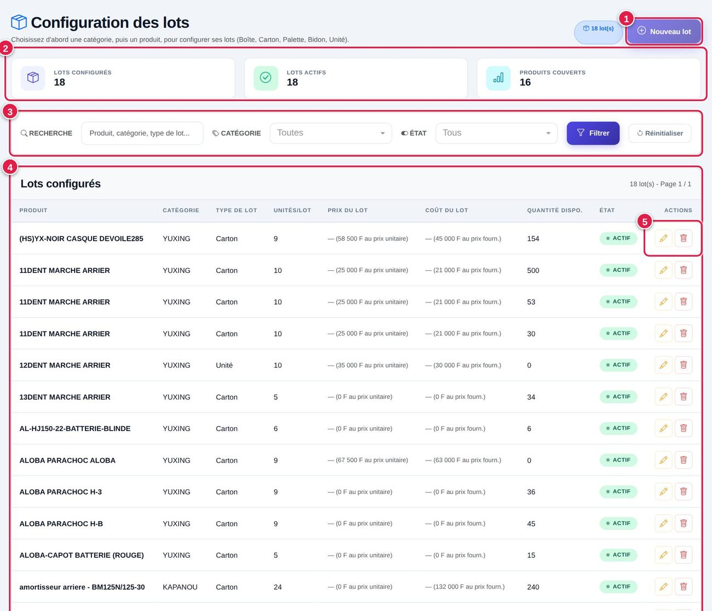
Que voit-on sur cet écran ?
- Le bouton principal en haut à droite : il sert à ajouter un nouvel élément.
- Les chiffres clés : un résumé rapide (total, actifs, inactifs…).
- Les filtres : tapez un mot dans « Recherche » ou choisissez un critère, puis cliquez sur Filtrer. Réinitialiser remet tout à zéro.
- La liste des éléments déjà enregistrés.
- Les actions de chaque ligne : le crayon pour modifier, la corbeille pour supprimer.
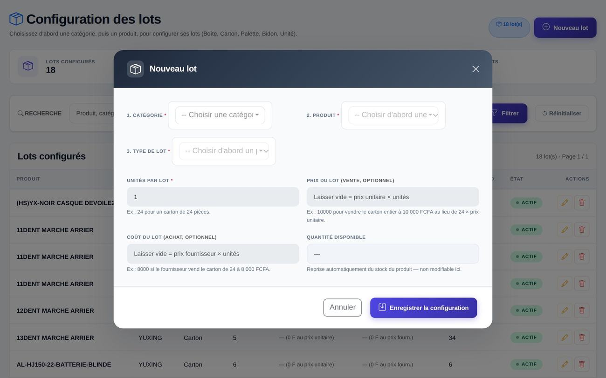
Exemple : un carton contient 24 pièces, il se vend 10 000 F et s'achète 9 500 F. Pendant la vente, il suffit de choisir « Carton » au lieu de « Unité ».
Comment faire, pas à pas
- Cliquez sur « Nouveau lot ».
- Choisissez le produit et le type de lot (carton, boîte…).
- Indiquez le nombre de pièces par lot, le prix de vente et le coût d'achat du lot.
- Enregistrez.
12Tranches de prix
À quoi ça sert ? Proposer des prix dégressifs : plus le client achète, moins le prix unitaire est élevé.
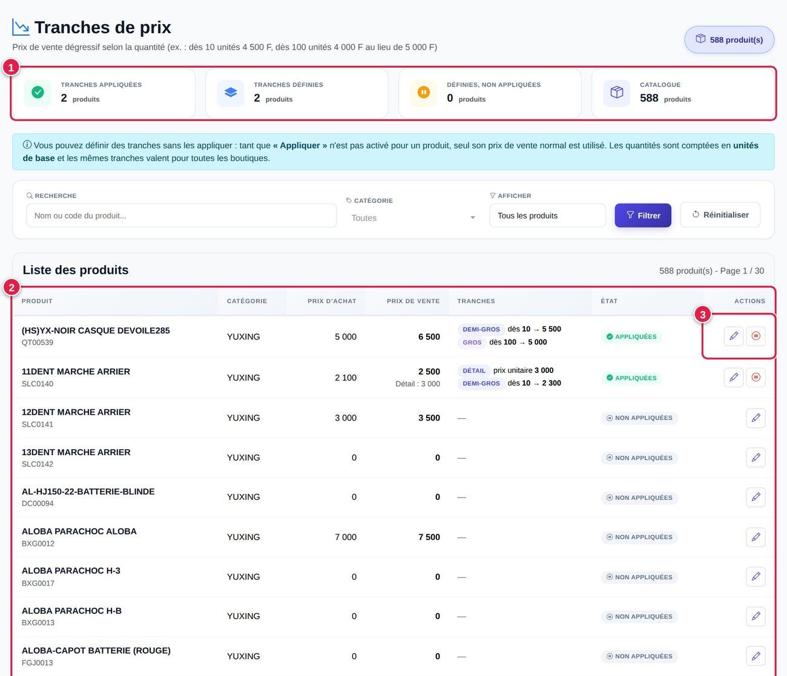
Que voit-on sur cet écran ?
- Les chiffres clés : produits avec tranches actives, etc.
- La liste des produits avec prix d'achat, prix de vente et nombre de tranches.
- Le bouton de modification d'un produit : il ouvre la fenêtre pour régler les tranches.
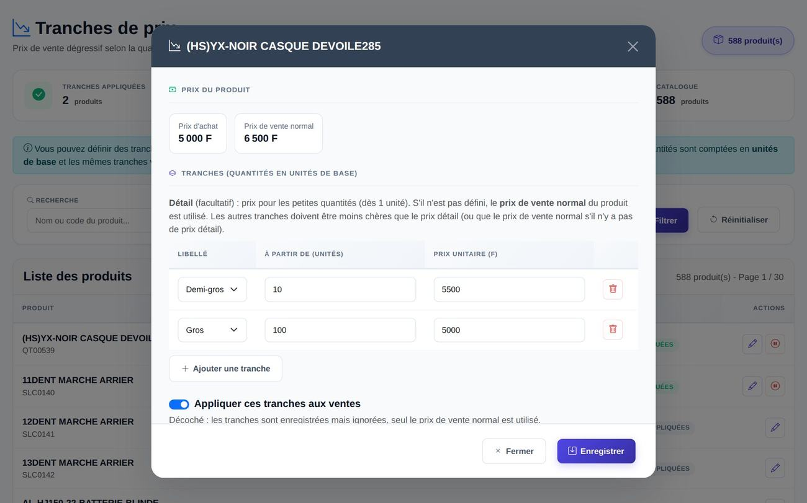
Au-dessus de la liste, les filtres (recherche, catégorie, « Afficher ») vous aident à retrouver un produit. Exemple : 1 à 9 pièces = 1 000 F l'unité ; à partir de 10 pièces = 900 F l'unité. Un prix « Détail » peut aussi être défini.
Comment faire, pas à pas
- Trouvez le produit dans la liste.
- Cliquez sur le bouton de modification (zone 3).
- Ajoutez vos tranches : quantité minimale et prix unitaire.
- Activez l'interrupteur « tranches » du produit puis enregistrez.
13Boutiques
À quoi ça sert ? Enregistrer vos points de vente (nom, logo, téléphone, adresse).
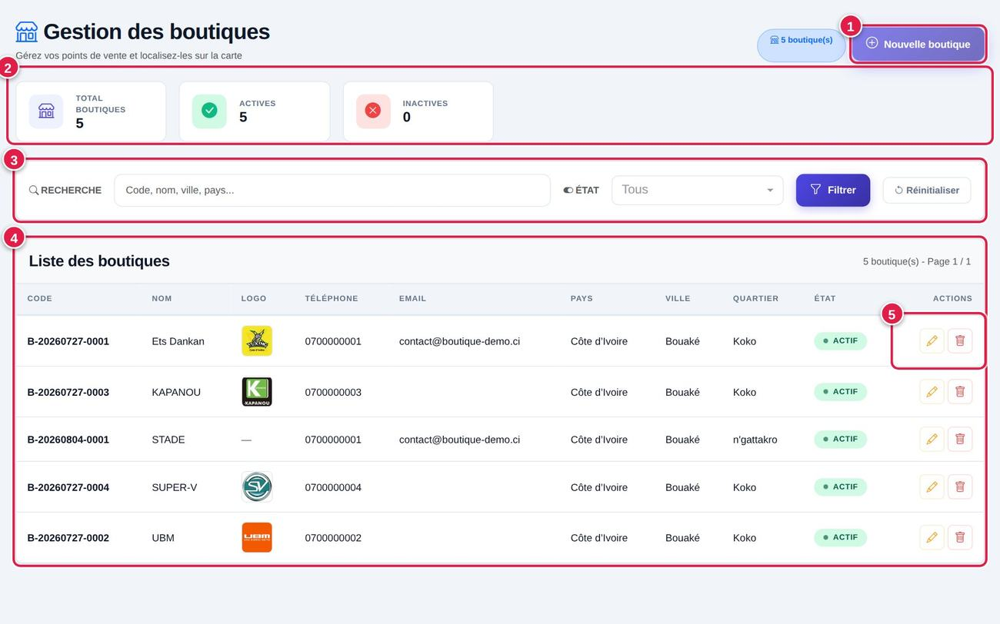
Que voit-on sur cet écran ?
- Le bouton principal en haut à droite : il sert à ajouter un nouvel élément.
- Les chiffres clés : un résumé rapide (total, actifs, inactifs…).
- Les filtres : tapez un mot dans « Recherche » ou choisissez un critère, puis cliquez sur Filtrer. Réinitialiser remet tout à zéro.
- La liste des éléments déjà enregistrés.
- Les actions de chaque ligne : le crayon pour modifier, la corbeille pour supprimer.
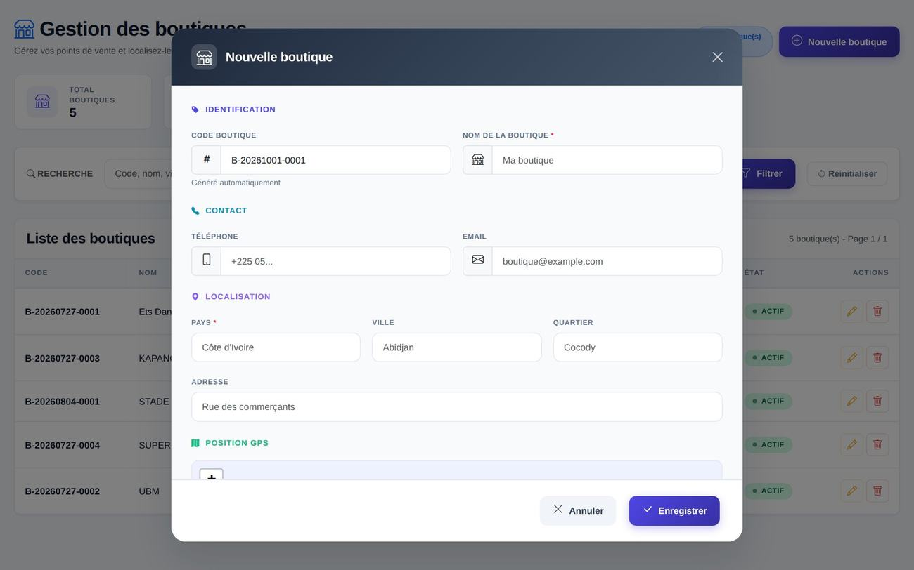
Le logo et les coordonnées de la boutique s'impriment sur les tickets, bons de commande et reçus.
Comment faire, pas à pas
- Cliquez sur le bouton « Nouvelle boutique » (zone 1).
- Une fenêtre s'ouvre : remplissez les champs. Ceux marqués d'une étoile rouge (*) sont obligatoires.
- Cliquez sur Enregistrer. L'élément apparaît tout de suite dans la liste.
- Pour corriger une erreur, cliquez sur le crayon de la ligne concernée (zone 5), changez ce qu'il faut, puis enregistrez.
14Taxes
À quoi ça sert ? Définir les taxes (par exemple TVA 20 %) et les remises que l'on peut appliquer sur une vente.
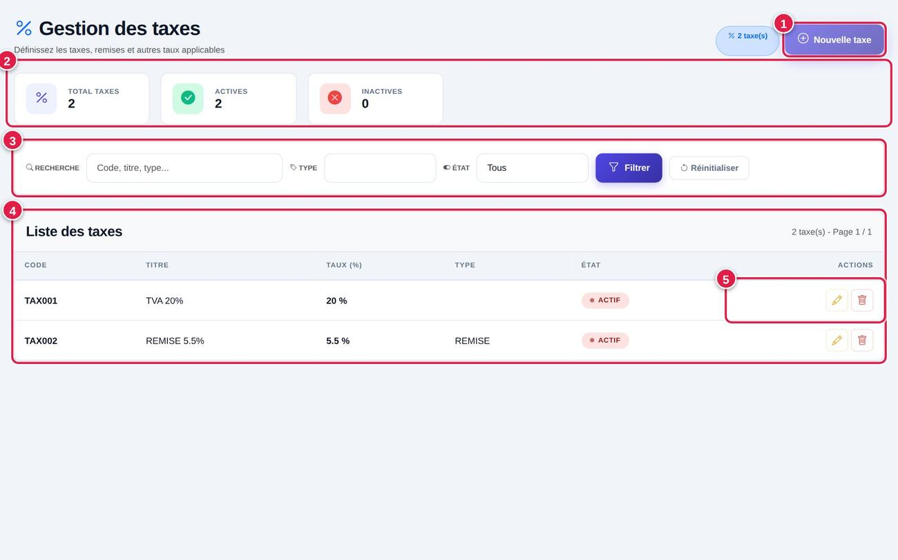
Que voit-on sur cet écran ?
- Le bouton principal en haut à droite : il sert à ajouter un nouvel élément.
- Les chiffres clés : un résumé rapide (total, actifs, inactifs…).
- Les filtres : tapez un mot dans « Recherche » ou choisissez un critère, puis cliquez sur Filtrer. Réinitialiser remet tout à zéro.
- La liste des éléments déjà enregistrés.
- Les actions de chaque ligne : le crayon pour modifier, la corbeille pour supprimer.
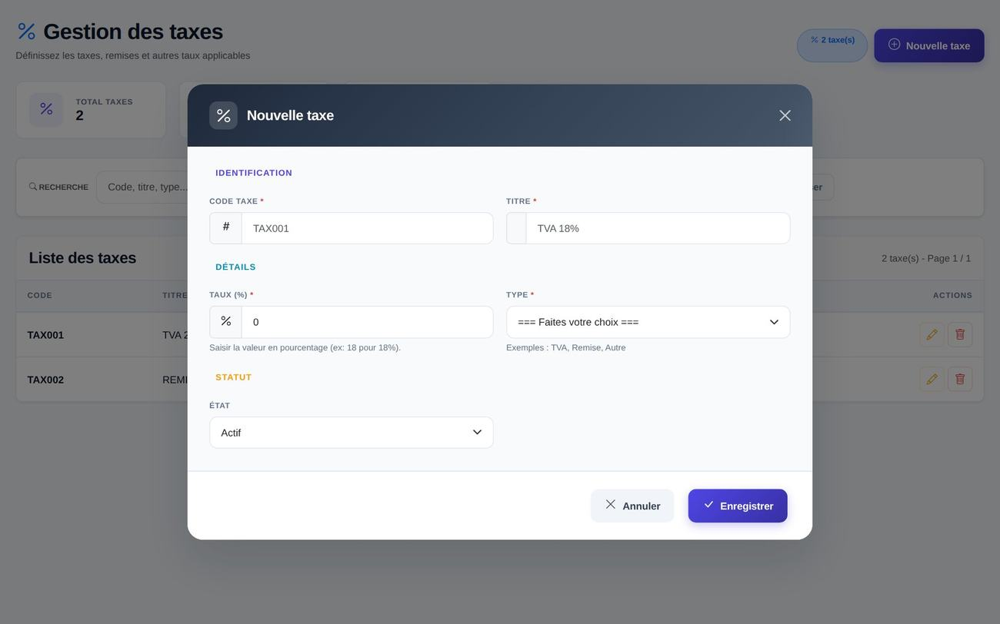
Chaque ligne a un taux en % et un type (taxe ou remise). Ils apparaissent ensuite dans les listes « TVA » et « Remise » de la vente.
Comment faire, pas à pas
- Cliquez sur le bouton « Nouvelle taxe » (zone 1).
- Une fenêtre s'ouvre : remplissez les champs. Ceux marqués d'une étoile rouge (*) sont obligatoires.
- Cliquez sur Enregistrer. L'élément apparaît tout de suite dans la liste.
- Pour corriger une erreur, cliquez sur le crayon de la ligne concernée (zone 5), changez ce qu'il faut, puis enregistrez.
15Entrée de stock
À quoi ça sert ? Ajouter de la marchandise au stock (réapprovisionnement, retour fournisseur…).
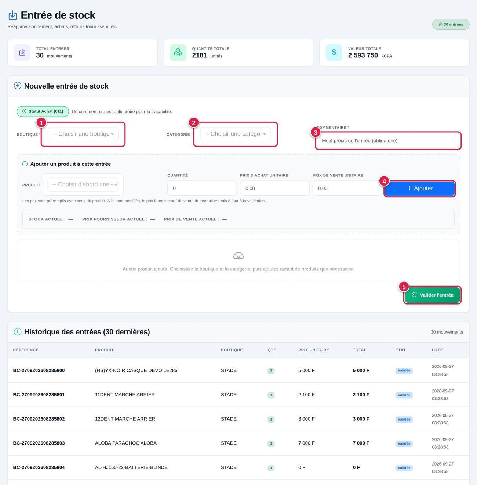
Que voit-on sur cet écran ?
- Boutique : l'endroit où la marchandise entre.
- Catégorie : sert à filtrer la liste de produits.
- Commentaire (obligatoire) : expliquez la raison, par exemple « Réception de marchandises ».
- Ajouter : place le produit choisi dans la liste de l'entrée.
- Valider l'entrée : enregistre définitivement.
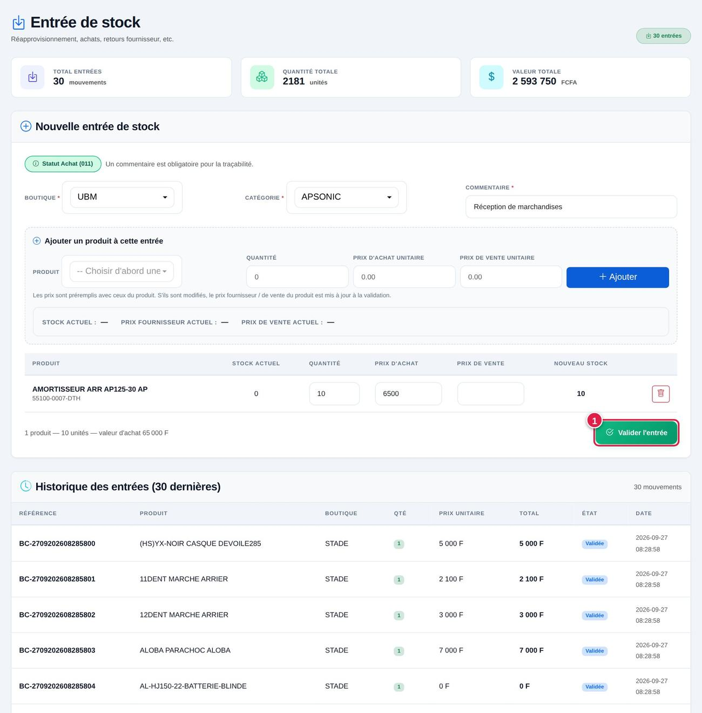
Vous pouvez ajouter autant de produits que vous voulez avant de valider. Chaque ligne montre le stock actuel, la quantité reçue, le prix d'achat, le prix de vente et le nouveau stock calculé. L'historique des 30 dernières entrées est en bas de page.
Comment faire, pas à pas
- Choisissez la boutique, puis la catégorie.
- Écrivez le commentaire.
- Choisissez un produit, saisissez la quantité (et les prix si besoin), cliquez sur Ajouter. Répétez pour chaque produit.
- Vérifiez le récapitulatif en bas du tableau (nombre de produits, unités, valeur).
- Cliquez sur Valider l'entrée.
16Sortie de stock
À quoi ça sert ? Retirer de la marchandise du stock sans vente : casse, perte, don, usage interne…
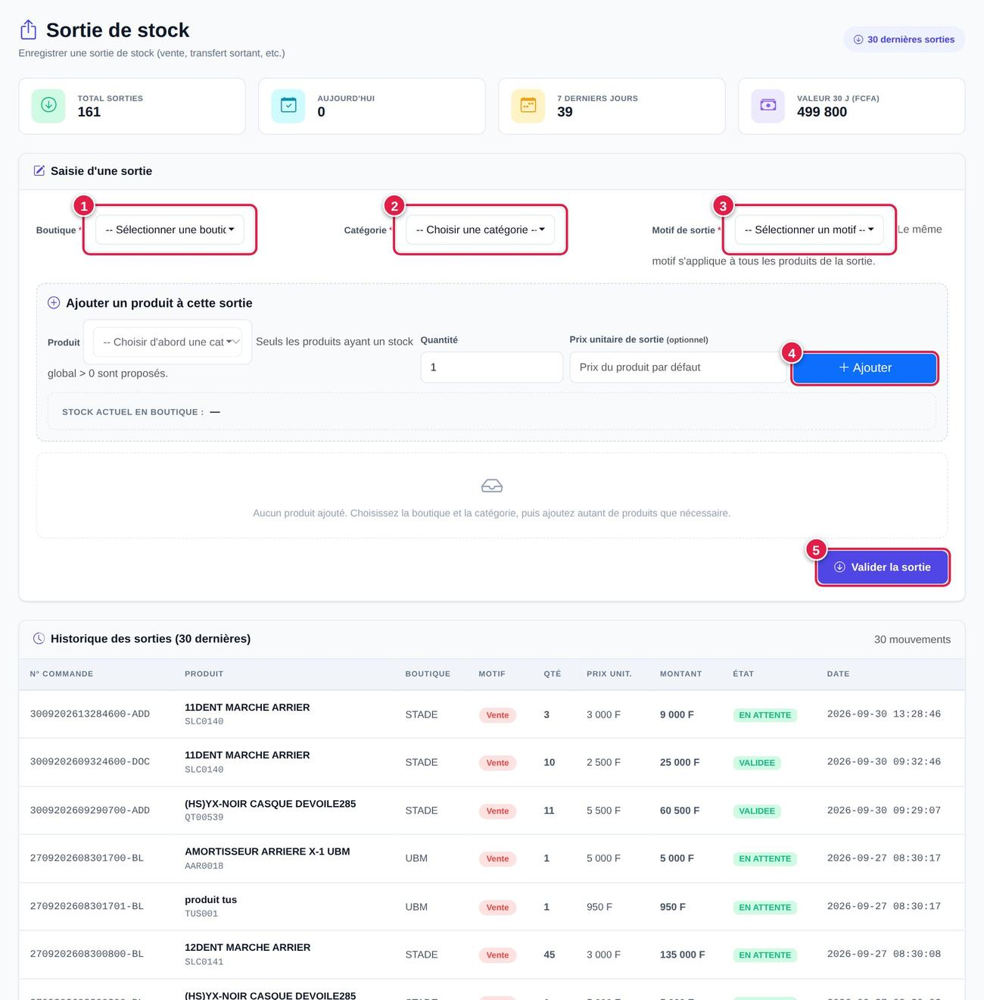
Que voit-on sur cet écran ?
- Boutique concernée.
- Catégorie des produits.
- Motif de sortie (obligatoire) : choisissez la raison dans la liste.
- Ajouter : place le produit dans la liste.
- Valider la sortie : enregistre définitivement.
Le fonctionnement est le même que l'entrée de stock : vous remplissez plusieurs lignes puis vous validez une seule fois. Un prix de sortie est facultatif (le prix du produit est utilisé par défaut).
Comment faire, pas à pas
- Choisissez la boutique, la catégorie et le motif.
- Ajoutez chaque produit avec sa quantité.
- Cliquez sur Valider la sortie.
17Transfert de stock
À quoi ça sert ? Envoyer de la marchandise d'une boutique vers une autre.
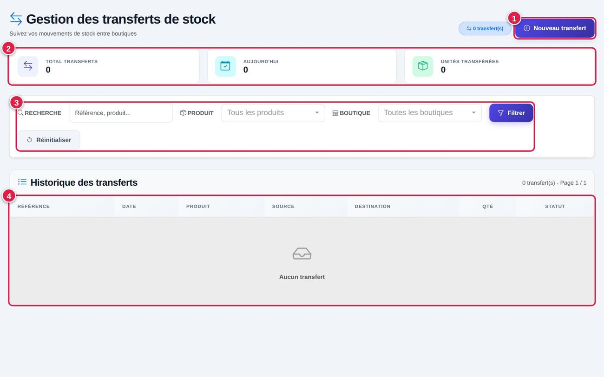
Que voit-on sur cet écran ?
- Nouveau transfert : ouvre la fenêtre pour créer un transfert.
- Les chiffres clés des transferts.
- Les filtres : référence, produit, boutique.
- L'historique de tous les transferts.
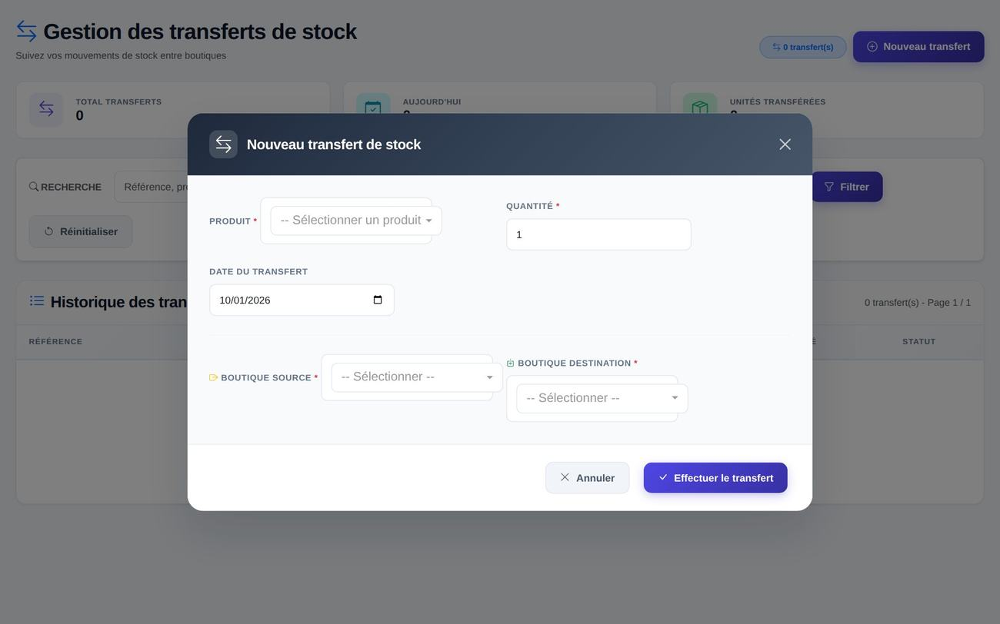
Dans la fenêtre, choisissez le produit, le type (unité ou lot), la boutique source (qui donne), la boutique destination (qui reçoit) et la quantité.
Comment faire, pas à pas
- Cliquez sur « Nouveau transfert ».
- Choisissez produit, boutique source et boutique destination.
- Saisissez la quantité et enregistrez.
18Ajustement du stock
À quoi ça sert ? Corriger le stock après un inventaire quand ce que vous comptez n'est pas ce que le logiciel affiche.
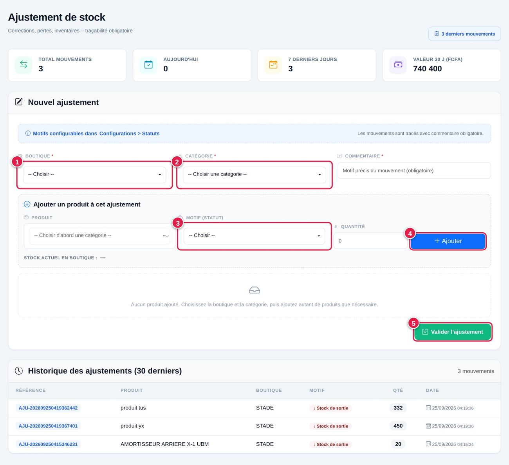
Que voit-on sur cet écran ?
- Boutique.
- Catégorie.
- Motif : « stock d'entrée » pour ajouter, « stock de sortie » pour retirer.
- Ajouter : place la ligne dans la liste.
- Valider l'ajustement.
Comme pour les entrées et sorties, vous pouvez ajouter plusieurs lignes avant de valider. Chaque ajustement est gardé dans l'historique (30 derniers) en bas de page.
Comment faire, pas à pas
- Choisissez boutique et catégorie, écrivez un commentaire.
- Pour chaque produit : choisissez le motif et la quantité à ajouter ou retirer, puis Ajouter.
- Cliquez sur Valider l'ajustement.
19Vente en détail (vente au comptoir)
À quoi ça sert ? C'est l'écran de caisse : vous choisissez les produits, le client, et vous encaissez.
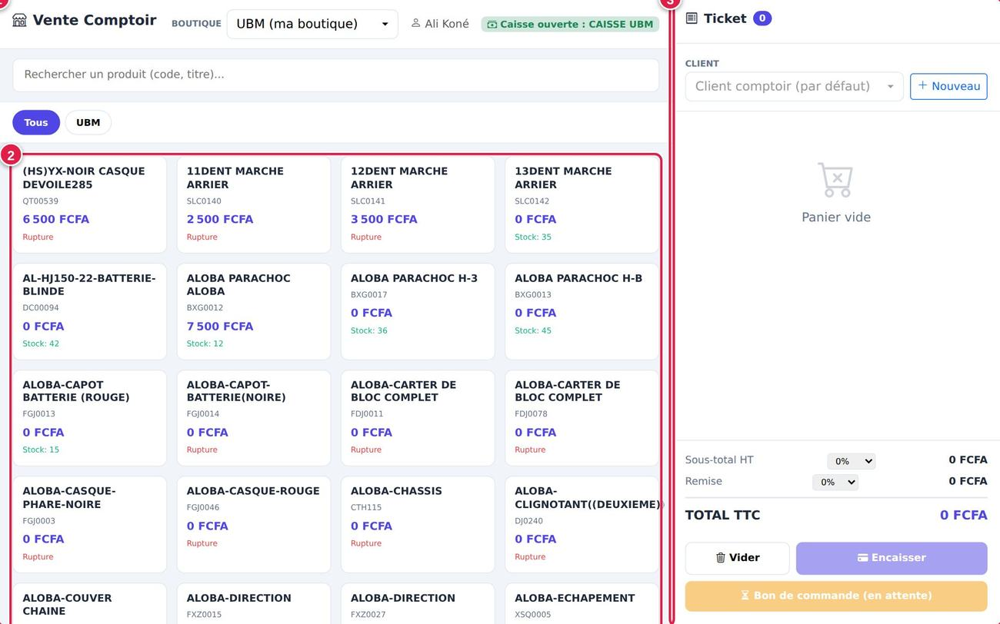
Que voit-on sur cet écran ?
- À gauche : la barre de recherche et les boutons de catégories (Tous, APSONIC…).
- Les produits sous forme de tuiles. Cliquez sur une tuile pour l'ajouter au ticket. Le prix et le stock sont affichés sur chaque tuile.
- À droite : le ticket de la vente en cours, avec le client, le total et les boutons d'action.
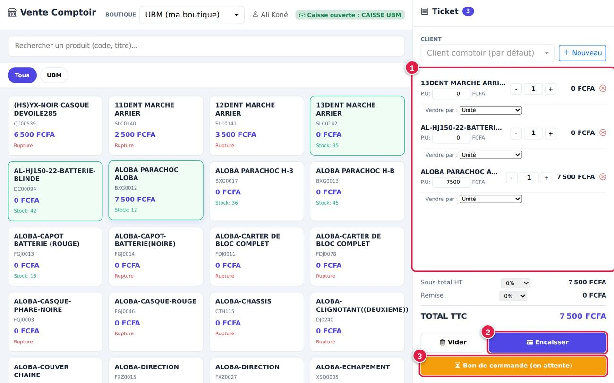
Sur la seconde image : (1) la liste des produits ajoutés, où vous pouvez changer la quantité avec + et −, (2) le bouton Encaisser, qui enregistre la vente payée tout de suite en espèces, (3) le bouton Bon de commande (en attente), qui enregistre la vente sans l'encaisser. Le bouton Vider efface le ticket. Le client par défaut est « Client comptoir » ; le bouton Nouveau à côté permet d'en créer un. Vous pouvez aussi appliquer une TVA ou une remise.
Comment faire, pas à pas
- Vérifiez la boutique affichée en haut.
- Cherchez ou cliquez sur les produits à vendre. Ajustez les quantités.
- Choisissez le client (ou laissez « Client comptoir »).
- Cliquez sur Encaisser pour une vente payée, ou sur Bon de commande (en attente) si le client paiera plus tard.
- Imprimez ou partagez le ticket proposé.
20Bon de commande (factures clients)
À quoi ça sert ? Suivre toutes les ventes faites aux clients : ce qui est payé, ce qui reste à payer, ce qui est validé.
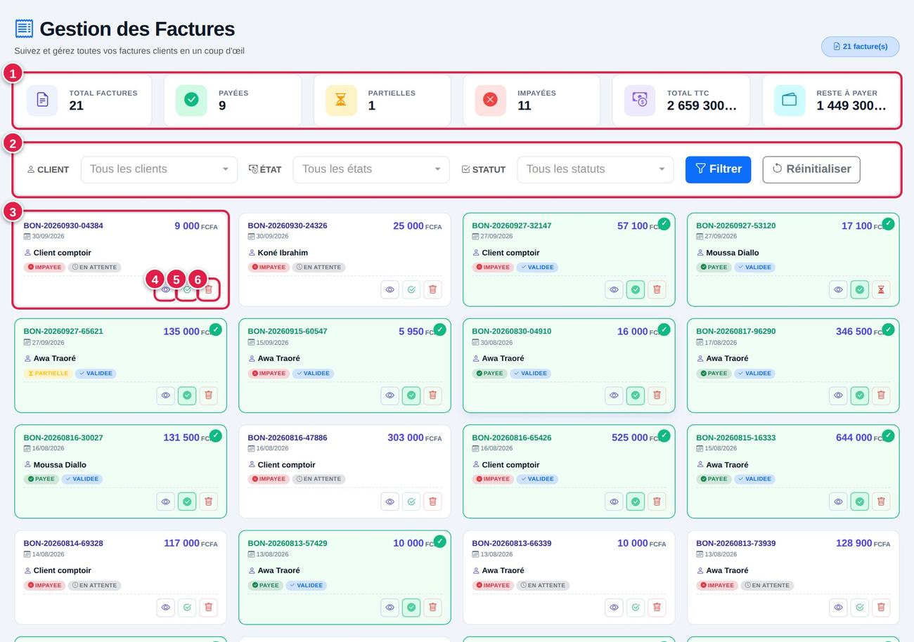
Que voit-on sur cet écran ?
- Les chiffres clés : total de factures, payées, partielles, impayées, montant total et reste à payer.
- Les filtres par client, état de paiement et statut.
- Une carte = un bon. On y lit le numéro, la date, le montant, le client, l'état (Payée / Partielle / Impayée) et le statut (En attente / Validée).
- L'œil : voir le détail du bon.
- La coche : valider le bon.
- La corbeille : supprimer un bon.
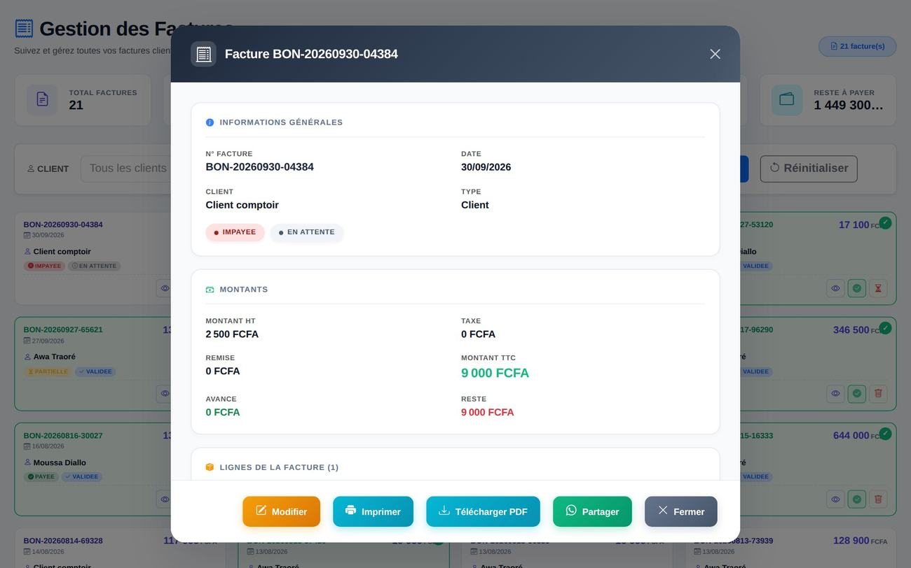
Dans la fenêtre de détail : Modifier (changer les lignes, en ajouter), Imprimer, Télécharger PDF, Partager (envoyer le document, par exemple par WhatsApp) et Fermer.
Comment faire, pas à pas
- Repérez le bon avec les filtres ou à la couleur de sa carte (vert = payé).
- Cliquez sur l'œil pour l'ouvrir.
- Imprimez-le ou partagez-le au client.
- Quand la marchandise est prête, cliquez sur la coche pour valider : cela crée le bon de livraison.
21Règlement des factures clients
À quoi ça sert ? Enregistrer l'argent qu'un client vous verse, pour une facture précise ou en avance.
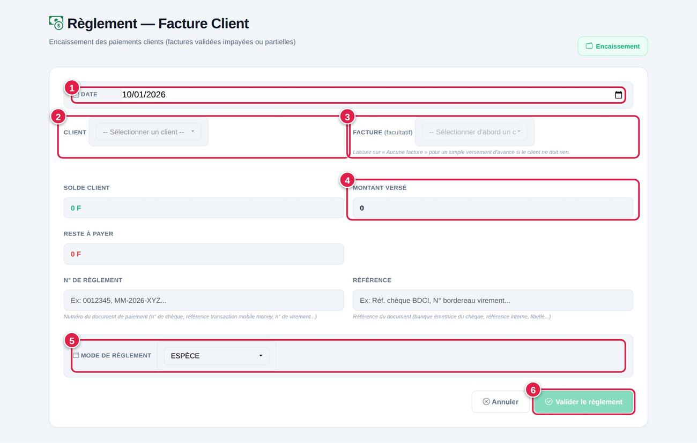
Que voit-on sur cet écran ?
- La date du règlement.
- Le client qui paie.
- La facture (facultatif) : choisissez-en une pour la régler précisément.
- Le montant versé.
- Le mode de règlement (espèce, chèque, mobile money…).
- Valider le règlement.
Deux champs se remplissent tout seuls : le solde client (en rouge, le client vous doit de l'argent ; en vert, il est en avance) et le reste à payer de la facture choisie. Si aucune facture n'est choisie, l'argent est compté comme une avance et vient en déduction des factures impayées les plus anciennes. Après validation, un reçu peut être imprimé ou partagé depuis la page Transactions.
Comment faire, pas à pas
- Choisissez le client.
- Choisissez la facture (ou laissez vide pour une avance).
- Saisissez le montant versé, le mode de règlement, éventuellement un numéro ou une référence.
- Cliquez sur Valider le règlement.
22Bon de livraison
À quoi ça sert ? Suivre les livraisons de marchandise faites aux clients et imprimer le bon.
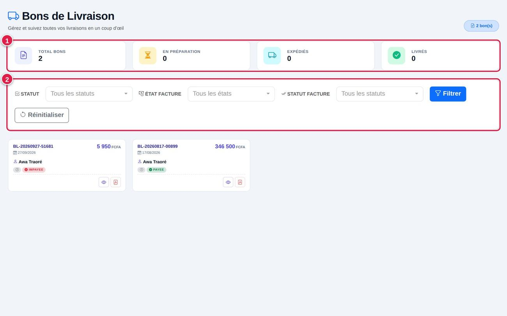
Que voit-on sur cet écran ?
- Les chiffres clés : total, en préparation, expédiés, livrés.
- Les filtres par statut de livraison et par état de la facture.
Un bon de livraison est créé automatiquement quand vous validez un bon de commande. Chaque carte permet de consulter le bon, de l'imprimer en PDF ou de le partager au client.
Comment faire, pas à pas
- Filtrez par statut si besoin.
- Ouvrez la carte du bon concerné.
- Imprimez ou partagez-le.
23Enregistrer une facture fournisseur
À quoi ça sert ? Enregistrer ce que vous achetez à un fournisseur. L'écran ressemble à la vente, mais pour les achats.
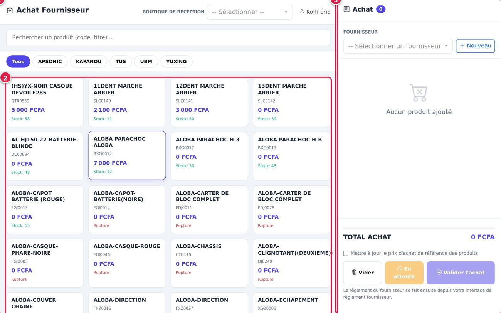
Que voit-on sur cet écran ?
- À gauche : la recherche et les catégories.
- Les produits à cliquer pour les ajouter à l'achat.
- À droite : le panier d'achat avec le fournisseur et le total.
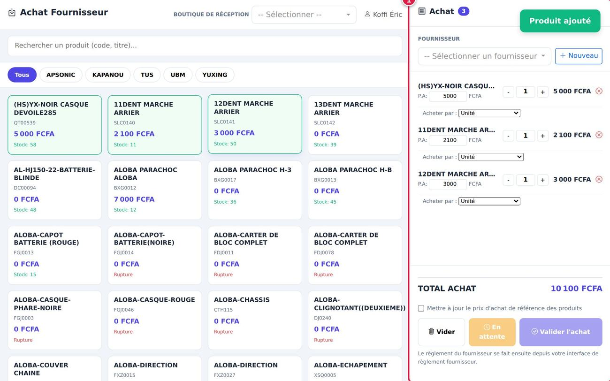
En haut, choisissez la boutique de réception. Dans le panier, choisissez le fournisseur (le bouton « Nouveau » en crée un). Pour chaque produit, vous réglez la quantité et le prix d'achat. La case « Mettre à jour le prix d'achat de référence » enregistre ces prix dans la fiche produit. Deux boutons : En attente (enregistre sans réception) et Valider l'achat (marchandise reçue, le stock augmente).
Comment faire, pas à pas
- Choisissez la boutique de réception et le fournisseur.
- Cliquez sur les produits achetés et réglez quantités et prix.
- Cliquez sur En attente si la marchandise n'est pas encore arrivée, ou sur Valider l'achat si elle est reçue.
24Bon de commande fournisseur
À quoi ça sert ? Suivre tous vos achats : payés ou non, reçus ou en attente.
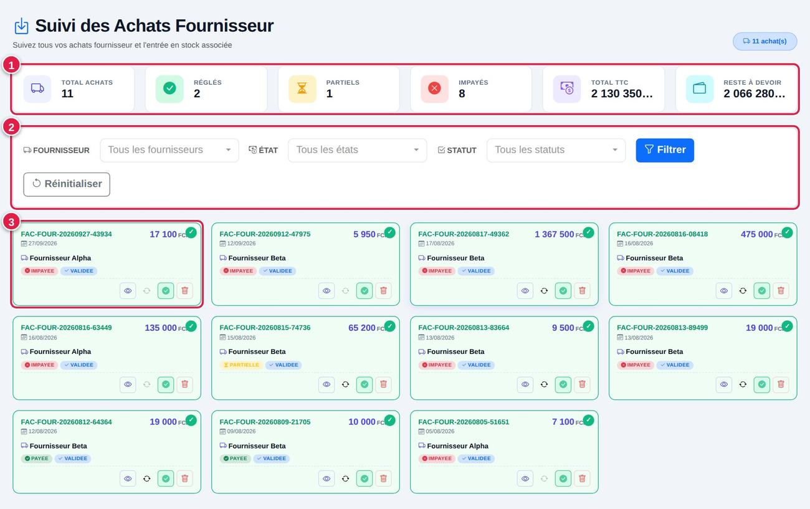
Que voit-on sur cet écran ?
- Les chiffres clés : achats, réglés, partiels, impayés, total et reste à devoir.
- Les filtres : fournisseur, état, statut.
- Une carte = un achat, avec ses boutons (voir, valider, transformer, supprimer).
Une fois l'achat validé (marchandise reçue), un bouton permet de le transformer en bon de commande client : le prix d'achat devient le prix de départ de la vente, que vous pouvez modifier.
Comment faire, pas à pas
- Ouvrez la carte pour voir le détail, imprimer ou partager.
- Quand la marchandise arrive, cliquez sur Valider.
25Règlement des factures fournisseurs
À quoi ça sert ? Enregistrer l'argent que vous versez à un fournisseur.
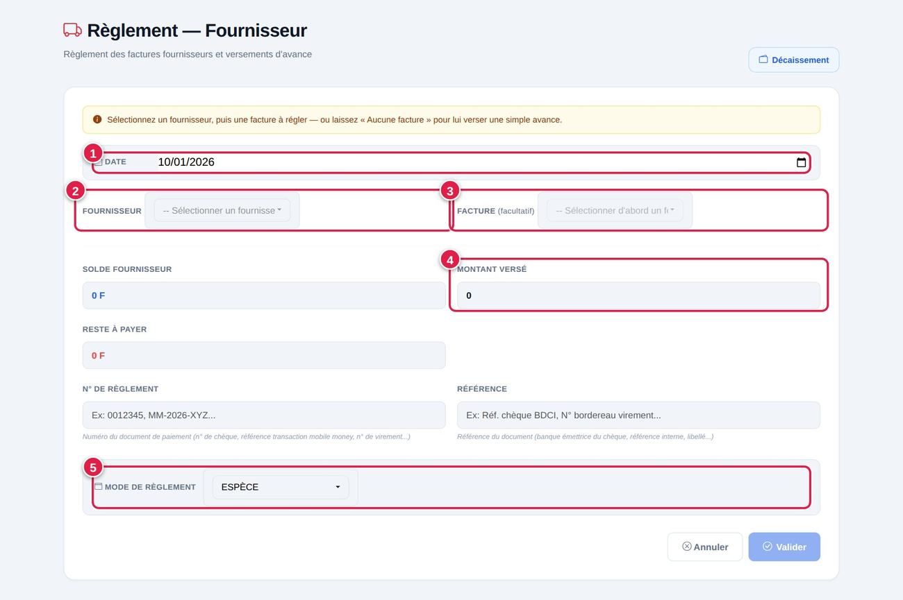
Que voit-on sur cet écran ?
- La date.
- Le fournisseur payé.
- La facture (facultatif).
- Le montant versé.
- Le mode de règlement.
Il fonctionne comme le règlement client : le solde fournisseur et le reste à payer s'affichent automatiquement. Le bouton de validation est en bas du formulaire.
Comment faire, pas à pas
- Choisissez le fournisseur et, si possible, la facture.
- Saisissez le montant versé et le mode de règlement.
- Validez.
26Caisse (gestion des caisses)
À quoi ça sert ? Créer et gérer les caisses de chaque boutique.
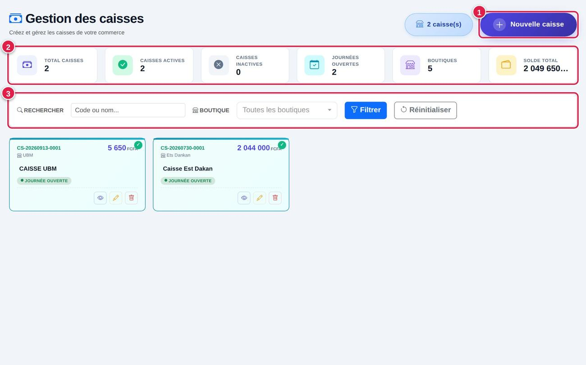
Que voit-on sur cet écran ?
- Nouvelle caisse : en créer une pour une boutique.
- Les chiffres clés : nombre de caisses, actives, journées ouvertes…
- Les filtres : recherche par nom et par boutique.
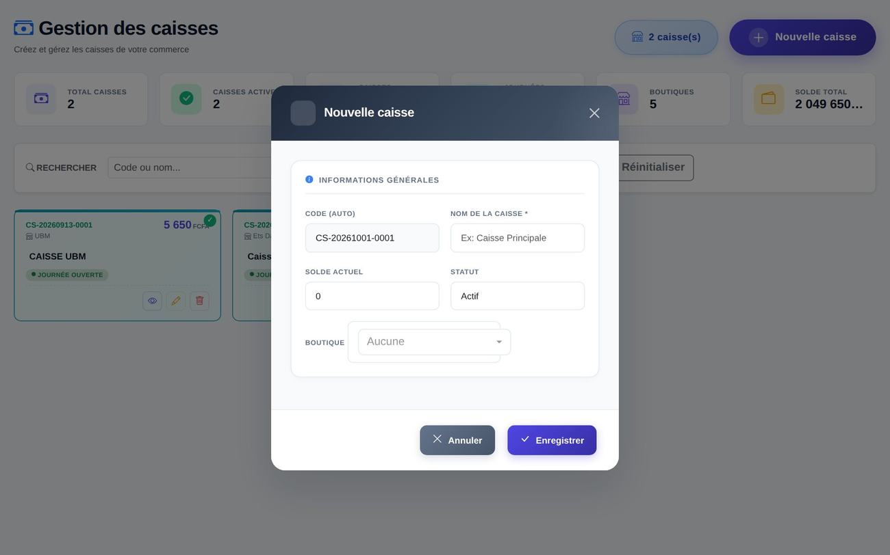
Chaque carte montre le nom de la caisse, la boutique et son solde actuel.
Comment faire, pas à pas
- Cliquez sur « Nouvelle caisse ».
- Donnez-lui un nom et choisissez la boutique.
- Enregistrez. Elle pourra ensuite être ouverte dans « Ouverture / Fermeture caisse ».
27Ouverture / Fermeture de caisse
À quoi ça sert ? Ouvrir la caisse le matin et la fermer le soir, en vérifiant que l'argent compté correspond aux ventes.
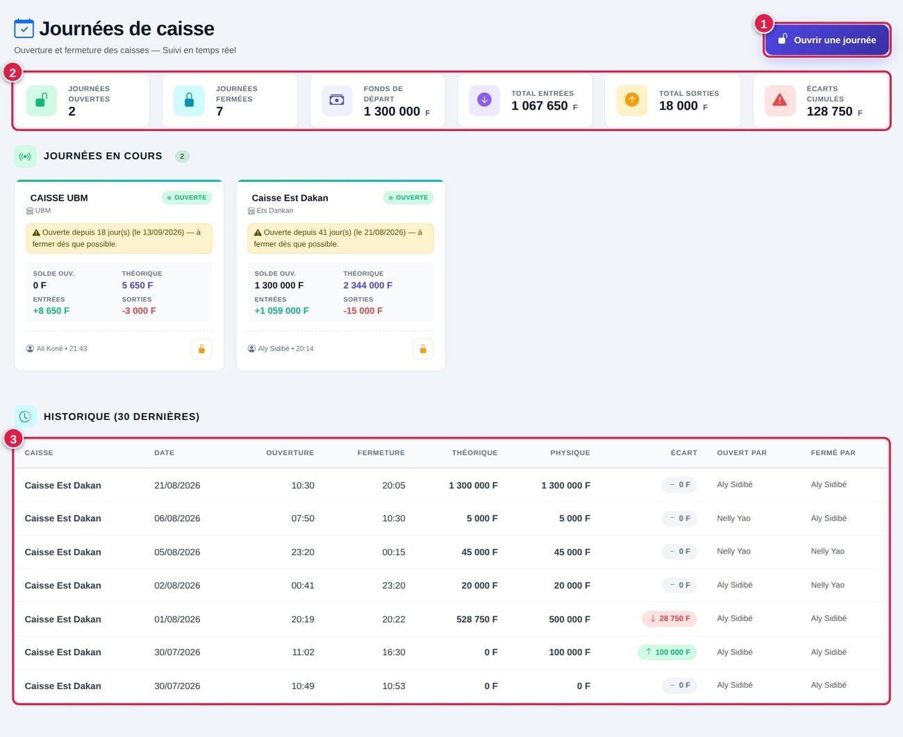
Que voit-on sur cet écran ?
- Ouvrir une journée : démarre la journée sur une caisse.
- Les chiffres clés : caisses ouvertes, solde de départ, total encaissé et décaissé, écarts.
- L'historique : pour chaque journée, l'ouverture, la fermeture, le montant théorique, le montant physique (compté) et l'écart.
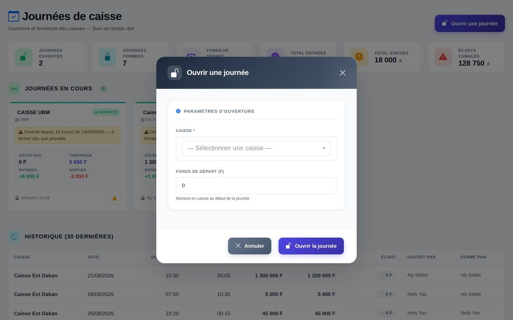
Dans « Journées en cours », chaque carte permet de fermer la journée en saisissant l'argent réellement compté. Le logiciel le compare au montant attendu : la différence est l'écart. Il est indiqué pour vous aider à repérer une erreur. Un avertissement « Ouverte depuis N jour(s) » apparaît si une journée n'a pas été fermée.
Comment faire, pas à pas
- Le matin : Ouvrir une journée, choisissez la caisse, indiquez l'argent présent au départ.
- Pendant la journée : encaissez normalement.
- Le soir : sur la carte de la journée, cliquez sur fermer, comptez l'argent et saisissez le montant physique.
28Dépenses
À quoi ça sert ? Noter les dépenses de la boutique (transport, loyer, électricité…) pour savoir où part l'argent.
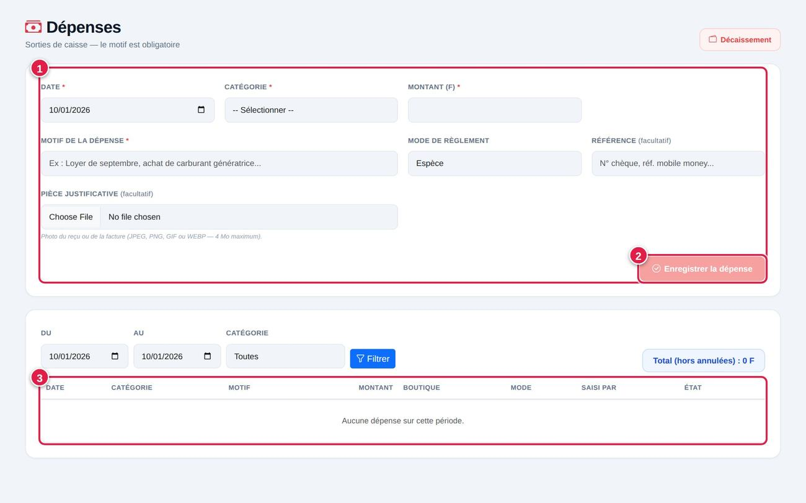
Que voit-on sur cet écran ?
- Le formulaire : date, catégorie, montant, motif, mode de règlement, référence et pièce justificative (facture, photo…).
- Le bouton Enregistrer la dépense.
- La liste des dépenses, avec ses filtres (période et catégorie) et le total.
Les champs marqués d'une étoile sont obligatoires. Le total en haut à droite de la liste ne compte pas les dépenses annulées.
Comment faire, pas à pas
- Choisissez la date et la catégorie.
- Saisissez le montant et le motif.
- Ajoutez si possible la pièce justificative.
- Cliquez sur Enregistrer la dépense.
29Transactions
À quoi ça sert ? Retrouver tous les mouvements d'argent : encaissements, décaissements, dépenses.
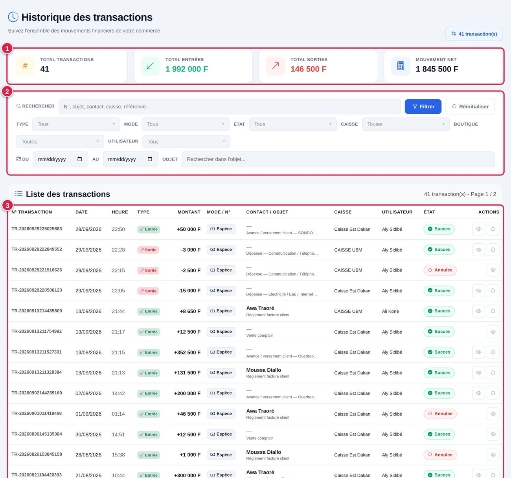
Que voit-on sur cet écran ?
- Les chiffres clés : total, entrées, sorties, mouvement net.
- Les filtres : recherche, type, mode, état, caisse, boutique, utilisateur, période.
- La liste : numéro, date, heure, type, montant, mode, client/fournisseur, caisse, utilisateur, état.
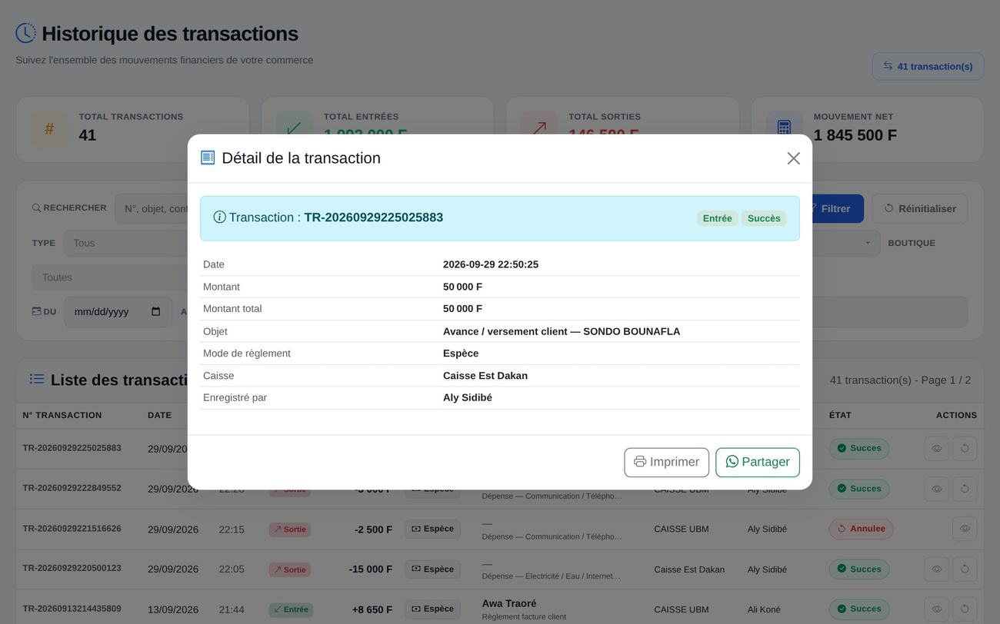
Le bouton « œil » de la colonne Actions ouvre le détail de la transaction, avec les boutons Imprimer et Partager pour le reçu ou le ticket. L'annulation d'une transaction est réservée à l'Administrateur et au Superviseur.
Comment faire, pas à pas
- Réglez les filtres (par exemple la période).
- Cliquez sur Filtrer.
- Ouvrez une ligne pour voir le détail ou imprimer le reçu.
30Historique des produits
À quoi ça sert ? Faire l'état de votre catalogue et de vos stocks, par catégorie et par boutique.
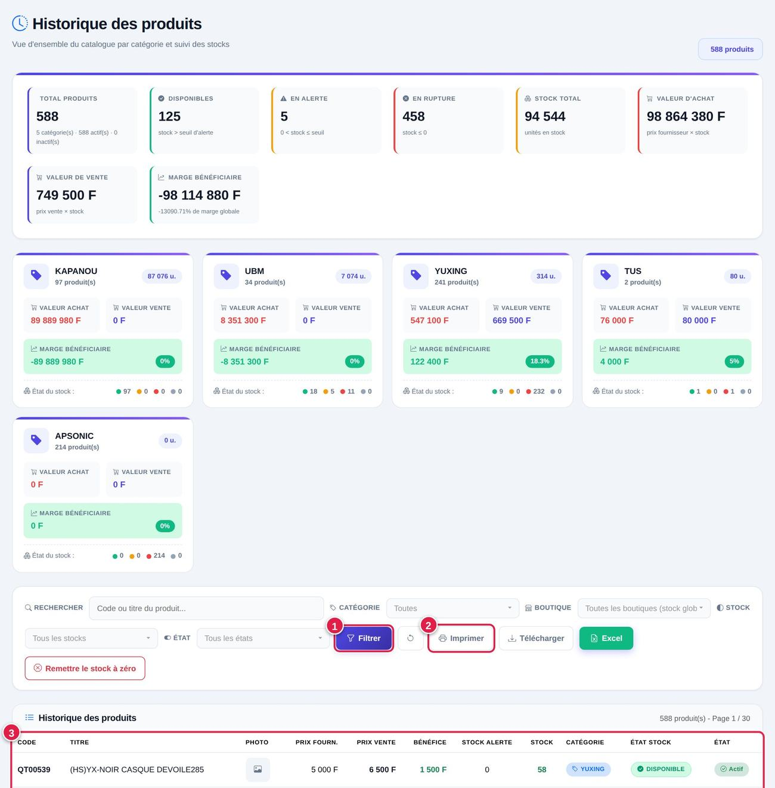
Que voit-on sur cet écran ?
- Le bouton Filtrer (avec recherche, catégorie, boutique, stock, état).
- Les boutons Imprimer, Télécharger (PDF) et Excel.
- Le tableau des produits.
En haut, des cartes donnent le nombre de produits, ceux disponibles, en alerte, en rupture, la valeur du stock et le bénéfice potentiel. Dessous, une carte par catégorie. Le bouton Remettre le stock à zéro (Administrateur et Superviseur) permet de vider le stock d'une catégorie dans une boutique, après confirmation.
Comment faire, pas à pas
- Choisissez la boutique (ou « stock global »).
- Cliquez sur Filtrer.
- Exportez avec Imprimer, PDF ou Excel.
31Mouvement de stock
À quoi ça sert ? Voir tout ce qui est entré et sorti du stock, et la valeur du stock.
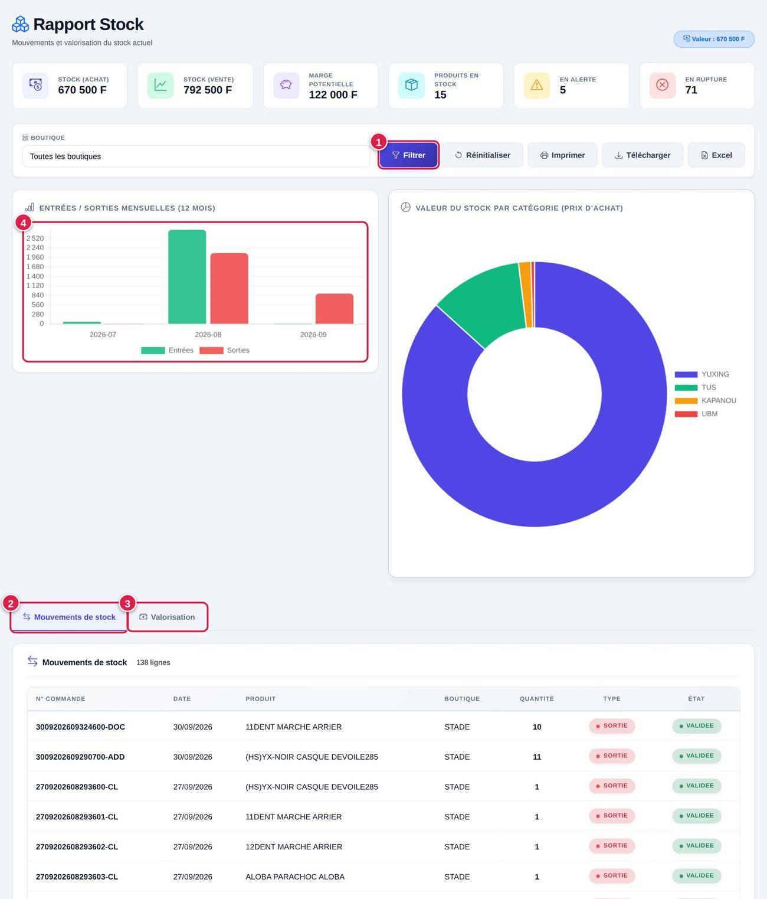
Que voit-on sur cet écran ?
- Le sélecteur de boutique et le bouton Filtrer.
- L'onglet Mouvements de stock : chaque entrée et sortie.
- L'onglet Valorisation : combien vaut votre stock.
- Le graphique entrées / sorties des 12 derniers mois.
Les boutons Imprimer, Télécharger et Excel permettent d'exporter le rapport. Le camembert montre la valeur du stock par catégorie.
Comment faire, pas à pas
- Choisissez la boutique.
- Cliquez sur l'onglet voulu.
- Exportez si besoin.
32Rapport commercial
À quoi ça sert ? Analyser vos ventes : chiffre d'affaires, marge, rentabilité, performance des vendeurs.
Que voit-on sur cet écran ?
- Les boutons de période (Jour, Semaine, Mois, Trimestre, Semestre, Année).
- Le bouton Appliquer.
- Les onglets : chiffre d'affaires, résumé des ventes, marge bénéficiaire, rentabilité, performance vendeurs.
Choisissez aussi la date et la boutique juste au-dessus du bouton Appliquer.
Comment faire, pas à pas
- Cliquez sur la période.
- Choisissez la date et la boutique.
- Cliquez sur Appliquer, puis sur l'onglet voulu.
33Rapport financier
À quoi ça sert ? Suivre l'argent : trésorerie, transactions, factures clients et fournisseurs, soldes.
Que voit-on sur cet écran ?
- L'onglet Trésorerie.
- L'onglet Soldes : ce que les clients vous doivent et ce que vous devez aux fournisseurs.
- Le tableau de l'onglet actif.
Les autres onglets sont : Transactions clients, Factures clients, Factures fournisseurs, Résumé des achats. Sur les onglets de factures, vous pouvez filtrer par état, client ou fournisseur et trier.
Comment faire, pas à pas
- Cliquez sur l'onglet voulu.
- Utilisez les filtres au-dessus du tableau.
- Parcourez les pages avec la pagination.
Les tâches de tous les jours
Les cinq manipulations les plus fréquentes, étape par étape.
Faire une vente au comptoir
- Le caissier ouvre la journée de caisse (Trésorerie › Ouverture / Fermeture caisse).
- Allez dans Ventes › Vente en Détail.
- Cliquez sur les produits, ajustez les quantités.
- Cliquez sur Encaisser.
- Imprimez ou partagez le ticket.
Vendre à crédit à un client
- Dans la vente en détail, choisissez le client.
- Cliquez sur Bon de commande (en attente).
- Dans Ventes › Bon de Commande, ouvrez le bon, puis validez-le quand la marchandise part.
- Quand le client paie : Ventes › Règlement Factures Clients.
Recevoir une marchandise
- Achats › Enregistrer Facture fournisseur : choisissez fournisseur et produits.
- Cliquez sur Valider l'achat à la réception : le stock augmente.
- Réglez le fournisseur dans Achats › Reglement Factures Fournisseurs.
Faire un inventaire
- Comptez vos produits.
- Allez dans Stock › Ajustement du stock.
- Ajoutez les écarts (en plus ou en moins) puis Valider l'ajustement.
Fermer la journée
- Trésorerie › Ouverture / Fermeture caisse.
- Comptez l'argent de la caisse.
- Fermez la journée en saisissant le montant physique.
- Consultez l'écart affiché.
Petit lexique
- Bon de commande
- Document qui récapitule une vente (ou un achat) avec les produits, les quantités et les prix.
- Bon de livraison
- Document remis au client pour la marchandise livrée.
- Caisse
- L'endroit (physique ou virtuel) où l'argent des ventes est gardé.
- Journée de caisse
- Période entre l'ouverture et la fermeture d'une caisse.
- Écart
- Différence entre l'argent attendu et l'argent réellement compté.
- Solde client
- Rouge : le client vous doit de l'argent. Vert : il est en avance.
- Rupture / Alerte
- Rupture : plus de stock. Alerte : le stock est bas.
- Lot
- Un conditionnement (carton, boîte…) qui contient plusieurs pièces.
- Tranche de prix
- Un prix plus bas à partir d'une certaine quantité.
- Statut En attente / Validée
- En attente : enregistré mais pas confirmé. Validée : confirmé.
- Payée / Partielle / Impayée
- Payée : tout est réglé. Partielle : une partie est réglée. Impayée : rien n'est réglé.